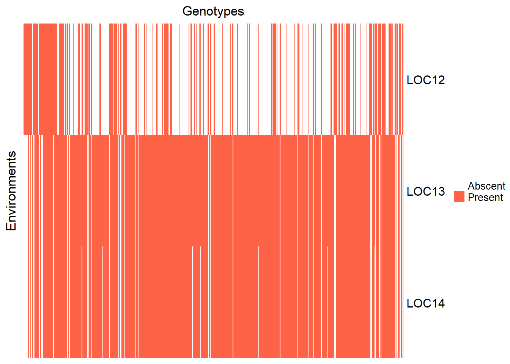
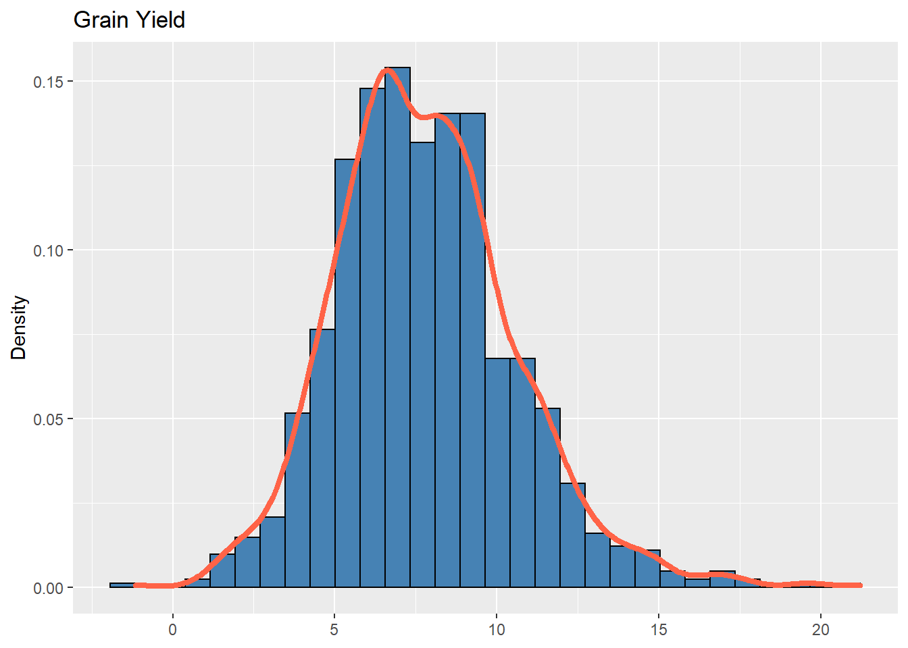
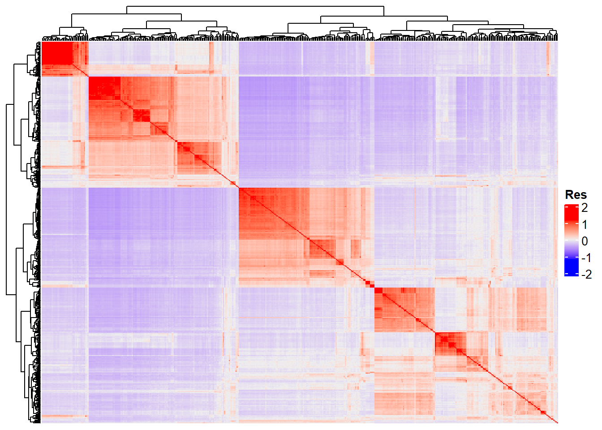

Last updated: 2022-11-11
Checks: 7 0
Knit directory: Genomic-Selection_Course/
This reproducible R Markdown analysis was created with workflowr (version 1.7.0). The Checks tab describes the reproducibility checks that were applied when the results were created. The Past versions tab lists the development history.
Great! Since the R Markdown file has been committed to the Git repository, you know the exact version of the code that produced these results.
Great job! The global environment was empty. Objects defined in the global environment can affect the analysis in your R Markdown file in unknown ways. For reproduciblity it’s best to always run the code in an empty environment.
The command set.seed(20221026) was run prior to running
the code in the R Markdown file. Setting a seed ensures that any results
that rely on randomness, e.g. subsampling or permutations, are
reproducible.
Great job! Recording the operating system, R version, and package versions is critical for reproducibility.
Nice! There were no cached chunks for this analysis, so you can be confident that you successfully produced the results during this run.
Great job! Using relative paths to the files within your workflowr project makes it easier to run your code on other machines.
Great! You are using Git for version control. Tracking code development and connecting the code version to the results is critical for reproducibility.
The results in this page were generated with repository version 18971f3. See the Past versions tab to see a history of the changes made to the R Markdown and HTML files.
Note that you need to be careful to ensure that all relevant files for
the analysis have been committed to Git prior to generating the results
(you can use wflow_publish or
wflow_git_commit). workflowr only checks the R Markdown
file, but you know if there are other scripts or data files that it
depends on. Below is the status of the Git repository when the results
were generated:
Ignored files:
Ignored: .Rproj.user/
Unstaged changes:
Modified: ETA_1_varB.dat
Modified: mu.dat
Modified: varE.dat
Note that any generated files, e.g. HTML, png, CSS, etc., are not included in this status report because it is ok for generated content to have uncommitted changes.
These are the previous versions of the repository in which changes were
made to the R Markdown (analysis/genomicselection2.Rmd) and
HTML (docs/genomicselection2.html) files. If you’ve
configured a remote Git repository (see ?wflow_git_remote),
click on the hyperlinks in the table below to view the files as they
were in that past version.
| File | Version | Author | Date | Message |
|---|---|---|---|---|
| Rmd | 18f9706 | WevertonGomesCosta | 2022-11-11 | Update |
| html | 18f9706 | WevertonGomesCosta | 2022-11-11 | Update |
Yesterday, we learned how to perform genomic selection in a single environment trial. Today, we will expand the models to a multiple-environment context.
To perform the analyses, we will need the following packages:
library(kableExtra)
require(RCurl)
require(data.table)
require(AGHmatrix)
require(rrBLUP)
require(BGLR)
require(tidyverse)
require(ComplexHeatmap)
require(cvTools)
require(patchwork)
require(emmeans)We will use the same data set as yesterday. Recall that the data are available online at this GitHub page [@fernandes_efficiency_2018].
adjmeans = read.csv(
"https://raw.githubusercontent.com/samuelbfernandes/Trait-assisted-GS/master/means.csv"
)
adjmeans$GENO = as.factor(adjmeans$GENO)
adjmeans$LOC = as.factor(adjmeans$LOC)head(adjmeans) %>% kbl(escape = F, align = 'c') %>%
kable_classic(
"hover",
full_width = F,
position = "center",
fixed_thead = T
)| X | LOC | GENO | h1 | h2 | h3 | h4 | M | Y |
|---|---|---|---|---|---|---|---|---|
| 1 | 12 | Belko2 | 0.171 | 1.050 | 1.975 | 2.875 | 0.7235394 | 9.120230 |
| 2 | 12 | CHRFS9 | 0.279 | 1.700 | 2.775 | 3.550 | 0.6080388 | 11.384432 |
| 3 | 12 | CHRSS2 | 0.290 | 1.825 | 2.600 | 3.850 | 0.5748191 | 15.087747 |
| 4 | 12 | E105 | 0.252 | 1.275 | 2.375 | 3.450 | 0.6954704 | 10.373466 |
| 5 | 12 | Epo | 0.261 | 1.200 | 2.325 | 3.325 | 0.7139562 | 6.726541 |
| 6 | 12 | ES5200 | 0.356 | 1.800 | 2.600 | 3.725 | 0.6593198 | 12.999241 |
In this case, we will use the whole data set. Note that the environments differ regarding the number of evaluated genotypes:
adjmeans %>% group_by(LOC) %>% summarise(length(GENO)) %>% kbl(
escape = F,
align = 'c',
col.names = c("Environments", "Number of genotypes")
) %>%
kable_classic(
"hover",
full_width = F,
position = "center",
fixed_thead = T
)| Environments | Number of genotypes |
|---|---|
| 12 | 192 |
| 13 | 438 |
| 14 | 431 |
Note also that some genotypes were not evaluated in all the environments:
genmat = model.matrix( ~ -1 + GENO, data = adjmeans)
envmat = model.matrix( ~ -1 + LOC, data = adjmeans)
genenvmat = t(envmat) %*% genmat
genenvmat_ch = ifelse(genenvmat == 1, "Present", "Abscent")
Heatmap(
genenvmat_ch,
col = c("white", "tomato"),
show_column_names = F,
heatmap_legend_param = list(title = ""),
column_title = "Genotypes",
row_title = "Environments"
)
In the Heatmap above, each column represents a genotype. The column is red if the genotype is present in an environment (in the rows), or red if it is absent.
We can also see how many genotypes we have in common between the environments:
genenvmat %*% t(genenvmat) %>% kbl(escape = F, align = 'c') %>%
kable_classic(
"hover",
full_width = F,
position = "center",
fixed_thead = T
)| LOC12 | LOC13 | LOC14 | |
|---|---|---|---|
| LOC12 | 192 | 145 | 141 |
| LOC13 | 145 | 438 | 431 |
| LOC14 | 141 | 431 | 431 |
In the matrix above, the diagonal represents the number of genotypes in the j-th environment and off-diagonal is the number of common genotypes between the j-th and the j’-th environments.
The distribution of frequencies regarding the evaluated trait (grain yield) in all the environments is also similar to the gaussian distribution:
ggplot(adjmeans, aes(x = Y)) +
geom_histogram(aes(y = ..density..),
bins = 30,
colour = "black",
fill = "steelblue") +
geom_density(alpha = .7,
size = 1.5,
colour = "tomato") +
labs(x = NULL, title = "Grain Yield", y = "Density")
Now we will load the genomic data. Here, we will also use the whole matrix:
SNPs = fread(
"https://raw.githubusercontent.com/samuelbfernandes/Trait-assisted-GS/master/snps.csv"
)
names_lines = SNPs[, 1]
SNPs = SNPs[, -1]
SNPs = as.matrix(SNPs[1:dim(SNPs)[1], 1:dim(SNPs)[2]])
rownames(SNPs) = names_lines$V1
dim(SNPs)[1] 453 58960SNPs[1:5, 1:5] X1_23664 X1_26742 X1_33900 X1_62283 X1_62548
E105 -1 -1 1 -1 1
Epo -1 -1 -1 -1 0
Grassl -1 1 -1 -1 1
GS109 1 -1 -1 1 1
Kalaicou 1 -1 -1 1 1SNPs[1:5, 1:5] %>% kbl(escape = F, align = 'c') %>%
kable_classic(
"hover",
full_width = T,
position = "center",
fixed_thead = T
) %>% footnote("Dimension: 453 $\\times$ 58960", general_title = "")| X1_23664 | X1_26742 | X1_33900 | X1_62283 | X1_62548 | |
|---|---|---|---|---|---|
| E105 | -1 | -1 | 1 | -1 | 1 |
| Epo | -1 | -1 | -1 | -1 | 0 |
| Grassl | -1 | 1 | -1 | -1 | 1 |
| GS109 | 1 | -1 | -1 | 1 | 1 |
| Kalaicou | 1 | -1 | -1 | 1 | 1 |
| Dimension: 453 \(\times\) 58960 |
Recall that we can change the SNPs codification to a dosage solution by simply summing the matrix’s elements by one:
SNPs = SNPs + 1SNPs[1:5, 1:5] X1_23664 X1_26742 X1_33900 X1_62283 X1_62548
E105 0 0 2 0 2
Epo 0 0 0 0 1
Grassl 0 2 0 0 2
GS109 2 0 0 2 2
Kalaicou 2 0 0 2 2SNPs[1:5, 1:5] %>% kbl(escape = F, align = 'c') %>%
kable_classic(
"hover",
full_width = T,
position = "center",
fixed_thead = T
)| X1_23664 | X1_26742 | X1_33900 | X1_62283 | X1_62548 | |
|---|---|---|---|---|---|
| E105 | 0 | 0 | 2 | 0 | 2 |
| Epo | 0 | 0 | 0 | 0 | 1 |
| Grassl | 0 | 2 | 0 | 0 | 2 |
| GS109 | 2 | 0 | 0 | 2 | 2 |
| Kalaicou | 2 | 0 | 0 | 2 | 2 |
Again, we will use the AGHmatrix package [@amadeu_aghmatrix_2016] to build the G matrix:
G_matrix = Gmatrix(SNPs,
method = "VanRaden",
ploidy = 2,
missingValue = NA)Initial data:
Number of Individuals: 453
Number of Markers: 58960
Missing data check:
Total SNPs: 58960
0 SNPs dropped due to missing data threshold of 1
Total of: 58960 SNPs
MAF check:
No SNPs with MAF below 0
Monomorphic check:
No monomorphic SNPs
Summary check:
Initial: 58960 SNPs
Final: 58960 SNPs ( 0 SNPs removed)
Completed! Time = 108.6 seconds Now we have the whole G matrix (453 x 453), which we can represent using a heatmap:
Heatmap(
G_matrix,
show_row_names = F,
show_column_names = F,
heatmap_legend_param = list(title = "Res")
)
“Res” in the heatmap legend title is for “Resemblance”.
For all the multi-environment genomic analyses, we will use the BGLR package [@BGLR]. Here, we will illustrate an analysis using the Bayesian Ridge Regression, but the reader may employ different methods by changing the model term in the ETA. Indeed, the only difference between the multiple-environment and the single-environment genomic selection using BGLR is in the ETA. This is because we have to build the matrices of the other effects of the model besides the marker effects. The step-by-step below is inspired by the script that @persa_development_2021 made available in their article. The reader can also consult other relevant articles, such as @dias_improving_2018 and @jarquin_reaction_2014.
length(levels(adjmeans$GENO))[1] 485adjmeans = droplevels(adjmeans[adjmeans$GENO %in% rownames(SNPs),])
length(levels(adjmeans$GENO))[1] 453envmat = model.matrix( ~ -1 + LOC, data = adjmeans)envmat[1:5, 1:3] %>% kbl(escape = F, align = 'c') %>%
kable_classic(
"hover",
full_width = F,
position = "center",
fixed_thead = T
) %>% footnote("Dimension: 1002 $\\times$ 3", general_title = "")| LOC12 | LOC13 | LOC14 | |
|---|---|---|---|
| 4 | 1 | 0 | 0 |
| 5 | 1 | 0 | 0 |
| 7 | 1 | 0 | 0 |
| 8 | 1 | 0 | 0 |
| 9 | 1 | 0 | 0 |
| Dimension: 1002 \(\times\) 3 |
genmat = model.matrix( ~ -1 + GENO, data = adjmeans)genmat[1:5, 1:5] %>% kbl(escape = F, align = 'c') %>%
kable_classic(
"hover",
full_width = F,
position = "center",
fixed_thead = T
) %>% footnote("Dimension: 1002 $\\times$ 453", general_title = "")| GENOE105 | GENOEpo | GENOGrassl | GENOGS109 | GENOKalaicou | |
|---|---|---|---|---|---|
| 4 | 1 | 0 | 0 | 0 | 0 |
| 5 | 0 | 1 | 0 | 0 | 0 |
| 7 | 0 | 0 | 1 | 0 | 0 |
| 8 | 0 | 0 | 0 | 1 | 0 |
| 9 | 0 | 0 | 0 | 0 | 1 |
| Dimension: 1002 \(\times\) 453 |
G = tcrossprod(tcrossprod(genmat, G_matrix), genmat)G[1:5, 1:5] %>% kbl(escape = F, align = 'c') %>%
kable_classic(
"hover",
full_width = F,
position = "center",
fixed_thead = T
) %>% footnote("Dimension: 1002 $\\times$ 1002", general_title = "")| 4 | 5 | 7 | 8 | 9 | |
|---|---|---|---|---|---|
| 4 | 2.0378566 | -0.0975785 | 0.0625361 | 0.0386082 | -0.0037088 |
| 5 | -0.0975785 | 1.2852632 | -0.1188605 | 0.0717024 | 0.1997132 |
| 7 | 0.0625361 | -0.1188605 | 1.8861439 | -0.1055920 | -0.1849634 |
| 8 | 0.0386082 | 0.0717024 | -0.1055920 | 1.7688249 | 0.5026451 |
| 9 | -0.0037088 | 0.1997132 | -0.1849634 | 0.5026451 | 1.8221100 |
| Dimension: 1002 \(\times\) 1002 |
E = tcrossprod(envmat)E[1:5, 1:5] %>% kbl(escape = F, align = 'c') %>%
kable_classic(
"hover",
full_width = F,
position = "center",
fixed_thead = T
) %>% footnote("Dimension: 1002 $\\times$ 1002", general_title = "")| 4 | 5 | 7 | 8 | 9 | |
|---|---|---|---|---|---|
| 4 | 1 | 1 | 1 | 1 | 1 |
| 5 | 1 | 1 | 1 | 1 | 1 |
| 7 | 1 | 1 | 1 | 1 | 1 |
| 8 | 1 | 1 | 1 | 1 | 1 |
| 9 | 1 | 1 | 1 | 1 | 1 |
| Dimension: 1002 \(\times\) 1002 |
GE = G * EGE[1:5, 1:5] %>% kbl(escape = F, align = 'c') %>%
kable_classic(
"hover",
full_width = F,
position = "center",
fixed_thead = T
) %>% footnote("Dimension: 1002 $\\times$ 1002", general_title = "")| 4 | 5 | 7 | 8 | 9 | |
|---|---|---|---|---|---|
| 4 | 2.0378566 | -0.0975785 | 0.0625361 | 0.0386082 | -0.0037088 |
| 5 | -0.0975785 | 1.2852632 | -0.1188605 | 0.0717024 | 0.1997132 |
| 7 | 0.0625361 | -0.1188605 | 1.8861439 | -0.1055920 | -0.1849634 |
| 8 | 0.0386082 | 0.0717024 | -0.1055920 | 1.7688249 | 0.5026451 |
| 9 | -0.0037088 | 0.1997132 | -0.1849634 | 0.5026451 | 1.8221100 |
| Dimension: 1002 \(\times\) 1002 |
ETA = list(list(X = E, model = "FIXED"),
list(X = G, model = "BRR"),
list(X = GE, model = "BRR"))BRR = BGLR(
y = adjmeans$Y,
ETA = ETA,
nIter = 10000,
burnIn = 5000,
thin = 5,
verbose = F
)
BRR_GENO = data.frame(
"Genotype" = adjmeans$GENO,
"Environment" = adjmeans$LOC,
"Yield" = adjmeans$Y,
"GEBV" = BRR$yHat
)
parvar = data.frame(
'Parameter' = c("G", "GE", "e"),
'Variance' = c(BRR$ETA[[2]]$varB, BRR$ETA[[3]]$varB, BRR$varE)
)parvar %>% kbl(escape = F, align = 'c') %>%
kable_classic(
"hover",
full_width = T,
position = "center",
fixed_thead = T
)| Parameter | Variance |
|---|---|
| G | 0.0709716 |
| GE | 0.0218964 |
| e | 5.8334675 |
The user may provide the eigenvalues of the covariance matrices that we built in the last topic:
G = tcrossprod(tcrossprod(genmat, G_matrix), genmat)
E = tcrossprod(envmat)
GE = G * E
EVD_G = eigen(G)
EVD_GE = eigen(GE)This action is useful for optimizing the computational time. After obtaining the eigenvalues (and the eigenvectors), we can insert them in the ETA component, substituting the covariance matrices. In that case, we will no longer use the BRR method. Instead, we will use the Reproducing Kernel Hilbert Spaces (RKHS) regressions, which use the eigenvalues to perform the analyses
ETA = list(
list(X = E, model = "FIXED"),
list(
K = EVD_G$vectors,
d = EVD_G$values,
model = "RKHS"
),
list(
V = EVD_GE$vectors,
d = EVD_GE$values,
model = "RKHS"
)
)After defining the ETA, we can fit the model:
RKHS = BGLR(
y = adjmeans$Y,
ETA = ETA,
nIter = 10000,
burnIn = 5000,
thin = 5,
verbose = F
)
RKHS_GENO = data.frame(
"Genotype" = adjmeans$GENO,
"Environment" = adjmeans$LOC,
"Yield" = adjmeans$Y,
"GEBV" = RKHS$yHat
)
parvar = data.frame(
'Parameter' = c("G", "GE", "e"),
'Variance' = c(RKHS$ETA[[2]]$varU, RKHS$ETA[[3]]$varU, RKHS$varE)
)data.frame(
'Parameter' = c("G", "GE", "e"),
'Variance' = c(RKHS$ETA[[2]]$varU, RKHS$ETA[[3]]$varU, RKHS$varE)
) %>% kbl(escape = F, align = 'c') %>%
kable_classic(
"hover",
full_width = T,
position = "center",
fixed_thead = T
)| Parameter | Variance |
|---|---|
| G | 0.9571014 |
| GE | 1.2843622 |
| e | 4.6283457 |
In the multi-environment context, there are four types of cross-validation: CV1, CV2, CV0, and CV00. In CV1, we predict the performance of genotypes that were not tested in any environments, based on the performance of their relatives. In CV2, we predict the performance of genotypes that were tested in some environments but were not tested in others. This is a common situation in plant breeding and configuring the sparse-test design. CV1 and CV2 are genotype-related. Conversely, CV0 and CV00 are related to the environments. In CV0, we predict how would be the performance of the tested genotypes in an untested environment. In CV00, we predict the performance of untested genotypes in untested environments. All the CV schemes have the same base: divide the data into a training set and a validation set by separating the data into k folds, then attributing NA for one fold and trying to predict the data from this fold based on the others.
Here, we will illustrate only CV1
nfolds = 3
nrept = 6The number of folds will represent the number of genotypes which will have the value set to NA. Bear in mind that that all the genotypes in a fold will have their values deleted. We have 453 genotypes and defined \(k = 3\), so each fold will have 151 genotypes. Therefore, for each repetition, we will predict the genomic breeding value of 151 genotypes based on the performance of 302 genotypes.
mod = lm(Y ~ GENO + LOC, data = adjmeans)
estmean = as.data.frame(emmeans(mod, specs = 'GENO'))[, 1:2]
colnames(estmean) = c("GENO", "Y")estmean = estmean[order(estmean$GENO), ]
SNPs = SNPs[order(row.names(SNPs)), ]Here, we will set a number for each genotype. Thus, we will substitute the ID column that we created in CV2 for a new ID column, appropriate for the CV1 scheme.
names = as.numeric(as.factor(rownames(SNPs)))
estmean$geno = NA
for (i in 1:453) {
estmean$geno[which(rownames(SNPs)[i] == estmean$GENO)] <- names[i]
}In this step, we will assign each genotype to a fold.
estmean$geno = as.factor(estmean$geno)
set.seed(100)
sort <- list()
for (a in 1:nrept) {
for (j in 1:nfolds) {
folds <-
cvFolds(nlevels(estmean$geno),
type = "random",
K = nfolds,
R = 1)
Sample <- cbind(folds$which, folds$subsets)
cv <- split(Sample[, 2], f = Sample[, 1])
}
sort[[a]] <- cv
}
rm(a, folds, j, cv, Sample)fold.list = sort
results = list()
Out = list()
ETA = list(list(X = SNPs, model = "BRR"))
for (z in 1:length(fold.list)) {
for (i in 1:nfolds) {
# Training set
train_data <- estmean
# Validation set
train_data[train_data$geno %in% fold.list[[z]][[i]], "Y"] <- NA
# Fitting model
CV_M <-
BGLR(
y = train_data$Y,
ETA = ETA,
nIter = 10000,
burnIn = 5000,
thin = 5,
verbose = F
)
# GEBV
Pred <- data.frame(Yhat = CV_M$yHat, G = estmean$geno)
rownames(Pred) <- rownames(estmean$geno)
# Predicted GEBV
results[[i]] <- Pred[Pred[, "G"] %in% fold.list[[z]][[i]],]
# Remove
rm(CV_M, Pred, train_data)
}
GEBV <- do.call(rbind, results)
GEBV <- GEBV[order(GEBV$G),]
# Log
log <- all(GEBV$G == estmean$geno)
# Results
Out[[z]] <- data.frame(
Rep = z,
Log = log,
Ac = round(cor(GEBV$Yhat, estmean$Y, use = "na.or.complete"), 3),
MSPE = round(mean(((GEBV$Yhat - estmean$Y) ^ 2
), na.rm = T), 3),
Slope = round(unname(
lm(estmean$Y ~ GEBV$Yhat)$coefficients[2]
), 3)
)
}
Out[[1]]
Rep Log Ac MSPE Slope
1 1 TRUE 0.41 3.868 1.003
[[2]]
Rep Log Ac MSPE Slope
1 2 TRUE 0.393 3.941 0.907
[[3]]
Rep Log Ac MSPE Slope
1 3 TRUE 0.344 4.114 0.863
[[4]]
Rep Log Ac MSPE Slope
1 4 TRUE 0.388 3.951 0.981
[[5]]
Rep Log Ac MSPE Slope
1 5 TRUE 0.405 3.888 0.989
[[6]]
Rep Log Ac MSPE Slope
1 6 TRUE 0.387 3.961 0.921
sessionInfo()R version 4.1.3 (2022-03-10)
Platform: x86_64-w64-mingw32/x64 (64-bit)
Running under: Windows 10 x64 (build 19042)
Matrix products: default
locale:
[1] LC_COLLATE=Portuguese_Brazil.1252 LC_CTYPE=Portuguese_Brazil.1252
[3] LC_MONETARY=Portuguese_Brazil.1252 LC_NUMERIC=C
[5] LC_TIME=Portuguese_Brazil.1252
attached base packages:
[1] grid stats graphics grDevices utils datasets methods
[8] base
other attached packages:
[1] emmeans_1.8.1-1 patchwork_1.1.2 cvTools_0.3.2
[4] robustbase_0.95-0 lattice_0.20-45 ComplexHeatmap_2.10.0
[7] forcats_0.5.2 stringr_1.4.1 dplyr_1.0.10
[10] purrr_0.3.4 readr_2.1.2 tidyr_1.2.1
[13] tibble_3.1.8 ggplot2_3.3.6 tidyverse_1.3.2
[16] BGLR_1.1.0 rrBLUP_4.6.1 AGHmatrix_2.0.4
[19] data.table_1.14.2 RCurl_1.98-1.8 kableExtra_1.3.4
loaded via a namespace (and not attached):
[1] TH.data_1.1-1 googledrive_2.0.0 colorspace_2.0-3
[4] rjson_0.2.21 ellipsis_0.3.2 rprojroot_2.0.3
[7] estimability_1.4.1 circlize_0.4.15 GlobalOptions_0.1.2
[10] fs_1.5.2 clue_0.3-61 rstudioapi_0.14
[13] farver_2.1.1 mvtnorm_1.1-3 fansi_1.0.3
[16] lubridate_1.8.0 xml2_1.3.3 splines_4.1.3
[19] codetools_0.2-18 doParallel_1.0.17 cachem_1.0.6
[22] knitr_1.40 jsonlite_1.8.0 workflowr_1.7.0
[25] broom_1.0.1 cluster_2.1.2 dbplyr_2.2.1
[28] png_0.1-7 compiler_4.1.3 httr_1.4.4
[31] backports_1.4.1 assertthat_0.2.1 Matrix_1.5-1
[34] fastmap_1.1.0 gargle_1.2.1 cli_3.3.0
[37] later_1.3.0 htmltools_0.5.3 tools_4.1.3
[40] coda_0.19-4 gtable_0.3.1 glue_1.6.2
[43] Rcpp_1.0.9 cellranger_1.1.0 jquerylib_0.1.4
[46] vctrs_0.4.1 svglite_2.1.0 iterators_1.0.14
[49] xfun_0.32 rvest_1.0.3 lifecycle_1.0.3
[52] googlesheets4_1.0.1 DEoptimR_1.0-11 MASS_7.3-58.1
[55] zoo_1.8-11 scales_1.2.1 hms_1.1.2
[58] promises_1.2.0.1 sandwich_3.0-2 parallel_4.1.3
[61] RColorBrewer_1.1-3 curl_4.3.3 yaml_2.3.5
[64] sass_0.4.2 stringi_1.7.6 highr_0.9
[67] S4Vectors_0.32.4 foreach_1.5.2 BiocGenerics_0.40.0
[70] truncnorm_1.0-8 shape_1.4.6 rlang_1.0.6
[73] pkgconfig_2.0.3 systemfonts_1.0.4 bitops_1.0-7
[76] matrixStats_0.62.0 evaluate_0.17 labeling_0.4.2
[79] tidyselect_1.2.0 magrittr_2.0.3 R6_2.5.1
[82] magick_2.7.3 IRanges_2.28.0 generics_0.1.3
[85] multcomp_1.4-20 DBI_1.1.3 pillar_1.8.1
[88] haven_2.5.1 whisker_0.4 withr_2.5.0
[91] survival_3.4-0 modelr_0.1.9 crayon_1.5.2
[94] utf8_1.2.2 tzdb_0.3.0 rmarkdown_2.17
[97] GetoptLong_1.0.5 readxl_1.4.1 git2r_0.30.1
[100] reprex_2.0.2 digest_0.6.29 webshot_0.5.4
[103] xtable_1.8-4 httpuv_1.6.5 stats4_4.1.3
[106] munsell_0.5.0 viridisLite_0.4.1 bslib_0.4.0 Weverton Gomes da Costa, Pós-Doutorando, Embrapa Mandioca e Fruticultura, wevertonufv@gmail.com↩︎